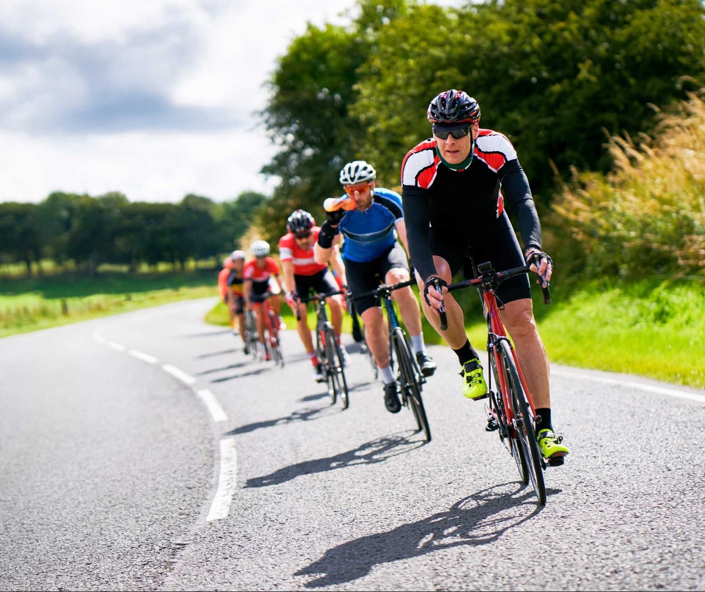
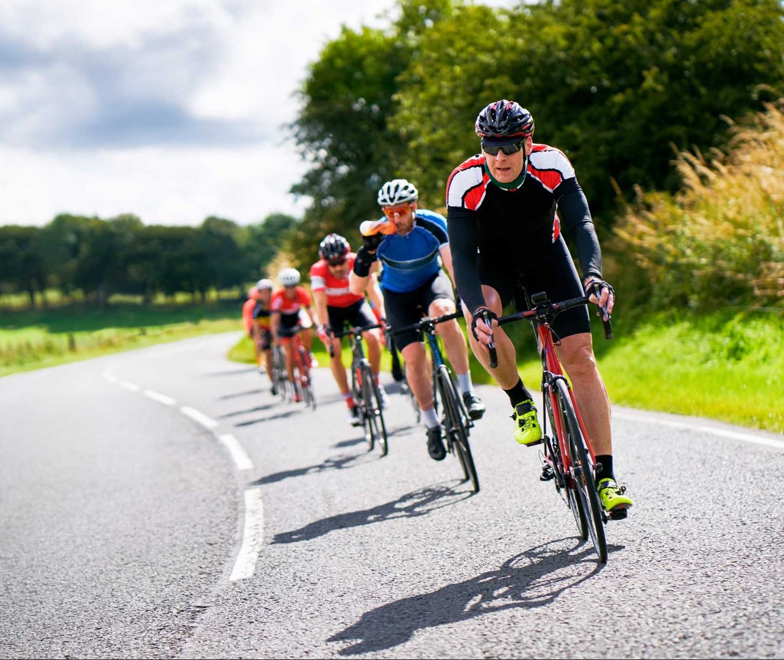

Where We Bike:
Biking is a great way to get some exercise and explore the city. We are excited to share with you where we
bike in
the city and country roads. We have compiled a list of all the best places to bike in the city and country,
where you
can find scenic views, restaurants, parks, etc. It's a great feeling to be able to bike around the city, but
it can be
tricky to know where to go. This map is here to help. The map shows you where you can bike in your city and
what kind of
roads are available for biking. It also includes a list of all the bike-friendly spots in your city and
their location on the map.
This section will show you how we've mapped out all of the best biking locations in your city, so that you
know where to go
no matter what type of road or terrain you are looking for!

 
